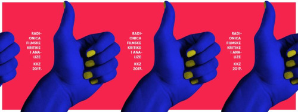
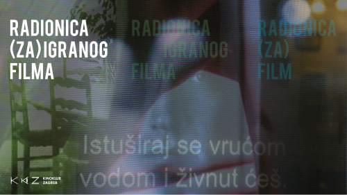

Ciklus filmova: Maska u filmu
Nedostatak lica ne znači nedostatak ličnosti. Maska skriva kožnatu površinu no zato svima otkriva dublje zakopanu srž osobnosti i duha. Predstavljamo četiri filmska pristupa maskiranju lica. Želite li doznati koje fantazije i strave skrivaju i otkrivaju neke od kultnih filmskih maski? Selektori programa su Ema Dobrota i Damir Juričić. Autor vizuala je Ivan Špehar. Sve projekcije odvijaju se četvrtkom i počinju u 21 sat, a ulaz je za sve slobodan!
Produljen rok za prijavu na Radionicu filmske kritike i analize
Kinoklub Zagreb četvrtu godinu za redom organizira besplatnu radionicu filmske kritike i analize. Cilj dvomjesečne radionice je osposobiti polaznike za pisanje kraćih filmskih kritika i ponuditi im korisne alate za filmsku analizu. Polaznici će tradicionalno činiti žiri kritike na Gledalištu Kinokluba Zagreb, a radovi nastali na radionici bit će objavljeni u filmskom časopisu Zapis te na stranicama Kinokluba Zagreb. Prijave za radionicu produljene su do 03. travnja 2017! Za prijavu valja poslati tekst o nekom od filmova s recentnog kinorepertoara. Tekst mora imati približno 2000 znakova uključujući razmake (tolerira se plus/minus 300 znakova) te će se na osnovu poslanih radova vršiti selekcija odnosno odabrati šest polaznika radionice.
Slike razlike #12: Tamo gdje živimo
Ovog petka, 24. ožujka nastavljamo s redovitim programom Slike razlike #12: Tamo gdje živimo. Radi se o izboru eksperimentalnih filmova koje je odabrao i pripremio filmski autor Vladislav Knežević. Brzi, kratki i uzbudljiv pregled antropoloških sondiranja. Od društvenih rituala američke nacije preko božanstava surove stvarnosti indijskog megalopolisa, sveprisutnosti europskog čovjeka-turista do egzistencijalne nepomičnosti arapske mladeži u skrivenom pariškom parku… Program detektira intrigantnu mrežu odnosa, statusa i sudbina ljudi na različitim mjestima gdje živimo.
Otvorene prijave za Radionicu (za)igranog filma
Scenarije na sunce, ajmo snimat’! Dolazi proljeće za filmove. Otvorene su prijave za radionicu (ZA)IGRANOG FILMA. Pozivaju se svi koji imaju napisan “gotov” scenarij, spremljen u neki untitled folder ili backupiran na neki disk. Sada je trenutak kada ga treba pronaći, izvaditi i poslati na prijavu. Budući da se radi o naprednoj radionici Kinokluba Zagreb, preduvjet za prijavu je završena Filmska škola KKZ-a i iskustvo nastanka filma kroz sve procese. Radionica je namijenjena svima onima koji bi snimili svoj (mogu i tuđi) “gotov” scenarij.